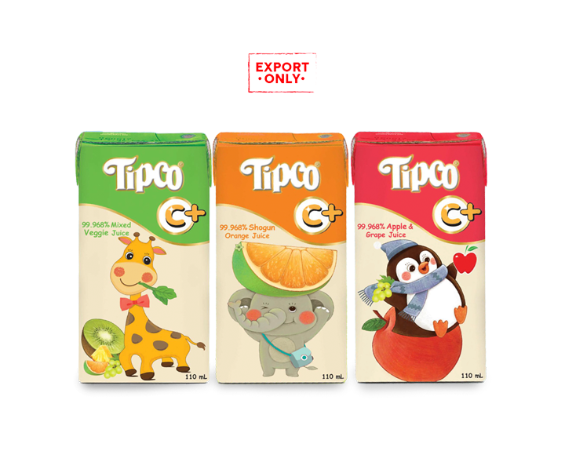

Overview
Tipco Foods is Thailand's fourth-largest juice producer, with a 6.1% share of a 20-billion-baht juice market. Our team analyzed the company end to end (business model, value chain, ESG, financials, SWOT, PESTEL and Five Forces) and proposed Tip & Go: a network of vending machines selling fresh juice, juice sodas and smoothies. We then measured how the strategy would change Tipco's valuation.
Current Challenges and Solution

Current Challenges
- Long cash conversion cycle: 83 days vs a peer average of 48
- High COGS and SG&A squeezing profit margins
- Negative revenue growth during COVID (−30% in 2020, −2% in 2021)
- Fierce competition in a mature market
Proposed Solution
Tip & Go vending machines sell directly to consumers, skipping the distribution stage. That cuts inventory days, turns sales into cash faster and avoids the rent and staff costs of opening new Squeeze stores, while tapping the growing demand for fresh, healthy drinks.
How the Strategy Was Chosen
IFE and EFE scores of 2.62 and 2.58 pointed to a horizontal growth strategy. We then scored three alternatives in a QSPM matrix, and the TOWS matrix confirmed the result:
| Alternative strategy | QSPM result |
|---|---|
| Juice & smoothie vending machines | Highest score: 5.77 |
| Skincare from fruit and cannabis extracts | Lower |
| Alcoholic juice products | Lower |
The market supports it: Thai juice sales are expected to grow at a 5% CAGR to 25 billion baht by 2026, and the beverage vending machine market at about 3% a year.
The Plan
Roll-out
30 pilot machines go into business districts in Bangkok in early 2023. If they reach 70% capacity utilization within three months, roll-out continues at 200 machines per quarter, first into busy sub-districts, then schools, offices and residential areas. Each machine costs 200,000 THB from VendingPlus (maintenance included) and rents about 1 m² of space at 3,000 THB a month.
Menu and pricing
Prices sit below Squeeze bars to stay competitive: fresh juice from 38 THB, juice soda 45 THB and smoothies up to 53 THB. The forecast assumes about 67 drinks per machine per day in 2023, at a weighted average of 48 THB per drink.
Marketing
A national celebrity brand ambassador, out-of-home ads on the BTS, live events in Siam, and a LINE Official Account loyalty program (1 point per drink, a free drink for every 12 points) plus a #TipcoFresh review campaign at launch.
Funding
The additional funds needed are covered by a 1-billion-baht, 10-year corporate bond (A− rating, 4.35% coupon), plus long-term loans of 600 million THB in 2023 and 400 million THB in 2024. This also moves Tipco toward its optimal debt-to-capital ratio of 32%.
Impact on Valuation
Vending revenue is projected at 487 million THB in the first year, growing at a 40.6% CAGR. Selling directly to machines also lowers COGS by 2–5% of sales through cheaper transport.
| Method | Share price (THB) | vs current 8.75 THB |
|---|---|---|
| DCF, 1-year target price with strategy | 15.18 | +73% |
| Scenario analysis: grey sky | 13.87 | +59% |
| Scenario analysis: base case | 22.12 | +153% |
| Scenario analysis: blue sky | 28.24 | +223% |
| Monte Carlo simulation: most likely price | 16.21 | +85% |
The Monte Carlo simulation gives an 84.1% chance that the share price ends above today's price. The sensitivity analysis shows the strategy holds as long as COGS stays below 81% of sales and SG&A below 25%.
Working capital
Because vending sales are paid in cash and skip the distribution center, the cash conversion cycle is projected to fall from 83 days to 52, 41 and 36 days in 2023, 2024 and 2025, beating the 48-day peer average.
Risks and Contingency Plan
| Risk | Mitigation |
|---|---|
| Change in customer behavior | Behavior monitoring, product customization and more health-benefit messaging |
| Raw material price swings | Quality and price terms agreed with contract farmers in advance |
| Exchange rate fluctuations | Forward contracts |
| Interest rate changes | Plain-vanilla swap from floating to fixed rate |
| Machine breakdowns | Quarterly maintenance with VendingPlus |
| Rising rent for machine locations | Fixed-price yearly rental contracts |
| Manufacturing waste | Closed-loop manufacturing (reduce, reuse, recycle) |
If demand falls short, the roll-out slows, starting with suburban areas, and spending shifts to marketing. As a last resort, the machines are sold to other brands at book value or scrapped.